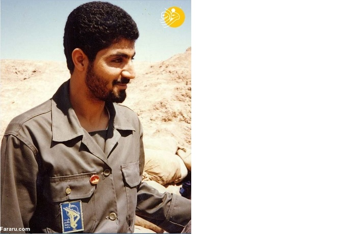
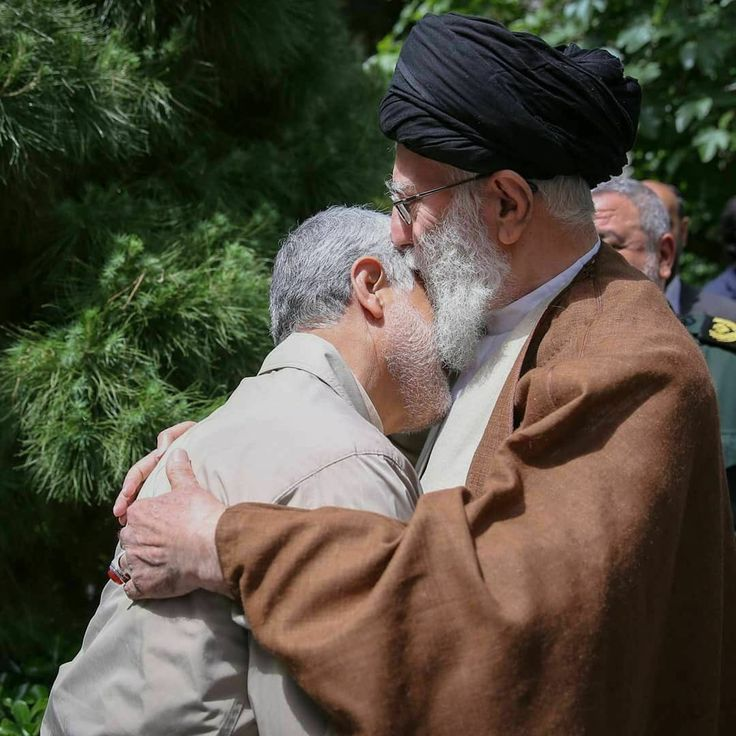

Qasem Soleimani
Qasem Soleimani-Commander of Hearts
Dates are not exact
1957
He was born in 1957in the village of Qanat-e Malek, Kerman Province.
1980
On 22 September 1980, when Saddam Hussein launched an invasion of Iran, setting off the Iraq–Iran War (1980–1988), Soleimani joined the battlefield
1981
In 1981 Soleimani serving as the leader of a military company, consisting of men from Kerman whom he assembled and trained
1982
In 1982 Soleimani ...
1983
In 1983 Soleimani ...

1984
In 1984 Soleimani ...

1990
After the war, during the 1990s, he was an IRGC commander in Kerman Province
1994
In 1994, Qasem Soleimani ...
1995
In 1995 he helped the group of officers including Ahmad ShahMasoud in Afghanistan...

1998
In 1998, Qasem Soleimani ...
2001
In 2001, Qasem Soleimani ...
2005
.
2010
.
2015
.
2016
.
2017

2018

2019

2020
"General" (Qasem Soleimani-Commander of Hearts)